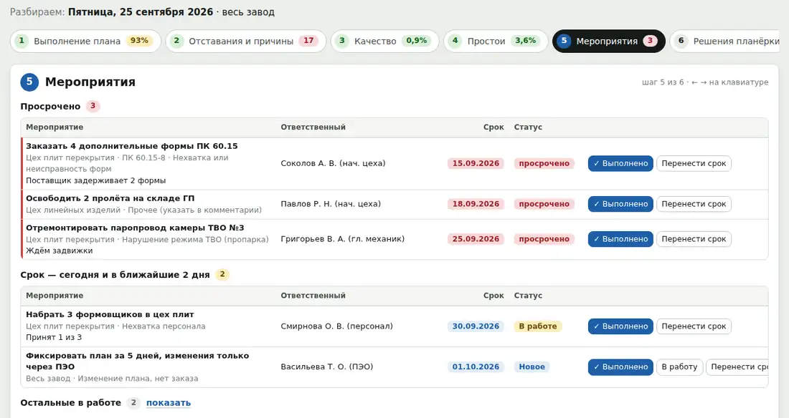
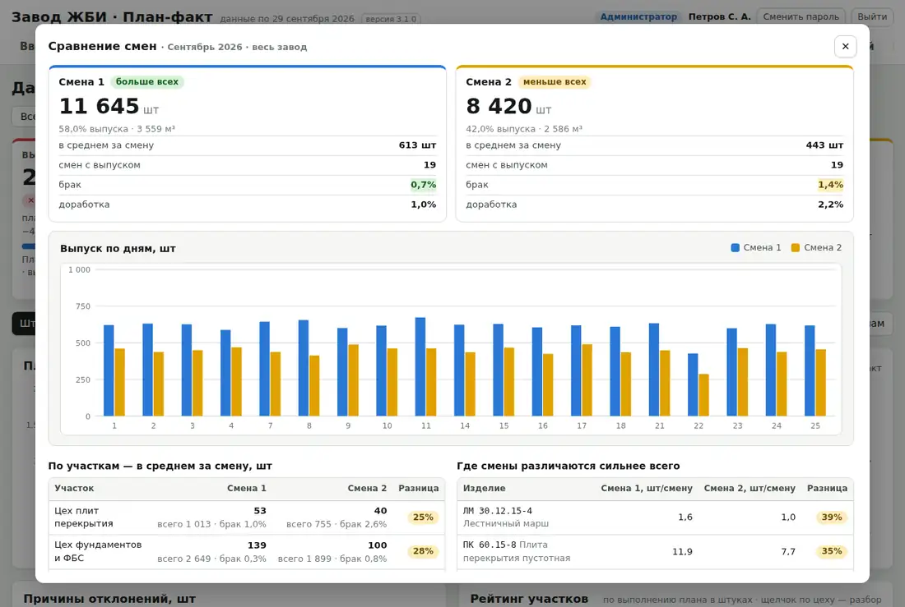
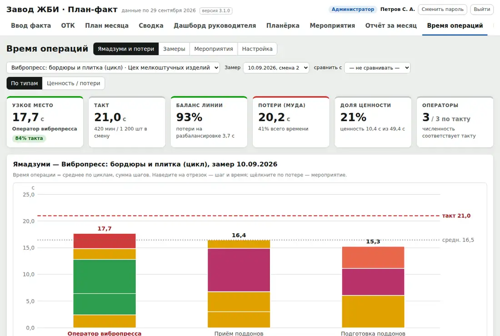

Plant Performance / План-факт
Операционный контроль
План-фактпрограмма учёта производства и контроля плана по сменам
Оперативное управление выпуском: от сменного задания мастера до решения на планёрке, ежедневном совещании по плану, и его исполнения. Отставание видно на следующее утро, а не в конце месяца.
Версия 3.3.1. Windows и macOS. Работает в сети завода без интернета. Первая версия сделана для завода железобетонных изделий.
Пока ведёте план-факт в Excel — скачайте бесплатные образцы: таблица план-факт по сменам, протокол производственного совещания, журнал учёта простоев. Все бесплатные образцы →
Учёт выпуска, брака и простоев оборудования — в момент события
Это не отчёт, который кто-то сводит раз в неделю. Мастер вносит факт смены, ОТК — брак, оператор — простой с телефона. Цифры сразу видны всем.
- Отклонение требует причины
- Причина ведёт к решению
- Решение становится мероприятием с ответственным и сроком
- Мероприятие проверяется на следующей планёрке

Производственное совещание по шагам, с протоколом
План, отставания и причины, качество, простои, мероприятия, решения — на одном экране. Решение вводится строкой «что, кто, срок» и сразу становится мероприятием.


План, который нельзя тихо переписать
Распределение по дням
Цель месяца по каждому изделию раскладывается по рабочим дням. Можно вставить блок из Excel или скопировать неделю.
Загрузка мощностей
Перегруз оснастки или линии на конкретный день виден ещё при планировании.
Утверждение и журнал
После утверждения любое изменение — только с причиной. Прошедшие дни заморожены.
Заказы и отгрузка
Выпущенное распределяется по заказам. Заказ под угрозой виден до срыва срока, недостающее одной кнопкой уходит в план.
Права по должностям
Для каждой должности и раздела: нет, просмотр или изменение. Журнал действий, корзина, точки восстановления.
Периоды
День, неделя, месяц, год. «Накопительно» и «с начала года» считаются сами.
Качество, простои, время операций



Простои по QR-коду
На оборудовании висит QR-код. Оператор сканирует его телефоном, выбирает причину и запускает таймер; после ремонта одним нажатием закрывает простой. Приложение на телефон не нужно.
Качество (ОТК)
Брак и доработку по видам дефектов вносит ОТК, а не мастер, — цифры независимы. Парето по дефектам, изделиям и сменам, паспорта качества партий.
Кому подходит
Производству со сменами и планом выпуска по дням, где факт сегодня собирают по телефону, в тетрадях и в Excel, а отставание замечают в конце месяца.
Директор по производству
Выполнение плана по участкам каждое утро, заказы под угрозой, поручения со сроком и проверкой.
Мастера и начальники цехов
Сменное задание и факт вносятся за пару минут; причина отклонения выбирается из списка.
ОТК и служба ремонта
Брак по видам дефектов и простои по причинам — свои, независимые от мастера цифры.
Изделия, участки, смены и причины настраиваются под завод. Отрасли, которым программа подходит лучше всего.
Ещё от Plant Performance
Скачать
Презентация, ролики, бесплатные образцы и шесть документов из комплектов — без регистрации.
Программы
Презентация и ролики
Скачать презентацию · PDF- Ролик «Завод в цифрах»MP4 · 0:50 · титры на экране
- Ролик «Бережливый завод»MP4 · 1:20 · титры на экране
- ИИ-ассистент: P&L и рискиMP4 · 0:51 · условные данные
- ИИ-ассистент: отчёт для директораMP4 · 1:33 · условные данные
Бесплатно для работы
Образцы для завода · 8
Простые формы, чтобы начать. Полные версии пришлём по запросу. Все образцы →
Файлы · 8
- Таблица план-факт по сменамExcel · как вести план-факт
- Протокол производственного совещанияWord · как провести за 15 минут
- Журнал учёта простоев оборудованияExcel · как считать простой
- График ППР оборудованияExcel · как составить
- Журнал входного контроляExcel · как заполнять
- Учёт и поверка СИExcel · график поверки
- Управленческая отчётностьExcel · сводка и KPI
- Экспресс-аудит заводаExcel · 30 вопросов
Документы
Завод ЖБИ
Файлы · 3
- Технологическая карта ТК-ТВО-01Тепловлажностная обработка в камерах · PDF, 5 страниц
- Инструкция ОТК ИК-ОК-03Контроль прочности бетона · PDF
- Чек-листы операторов на сменуФормы для печати A4 · PDF
Документы
Завод водонагревателей
Файлы · 3
- Технологическая карта ТК-ЭМ-02Обжиг эмали · PDF, 5 страниц
- Инструкция ОТК ИК-ОК-03Контроль эмалевого покрытия · PDF
- Доски участковПлан и факт по часам, формы A3 · PDF
Напишите нам
Расскажите в двух строках, что за завод и что хотите посмотреть или автоматизировать. Ответим, покажем программу в работе и пришлём документы, которых нет на сайте.